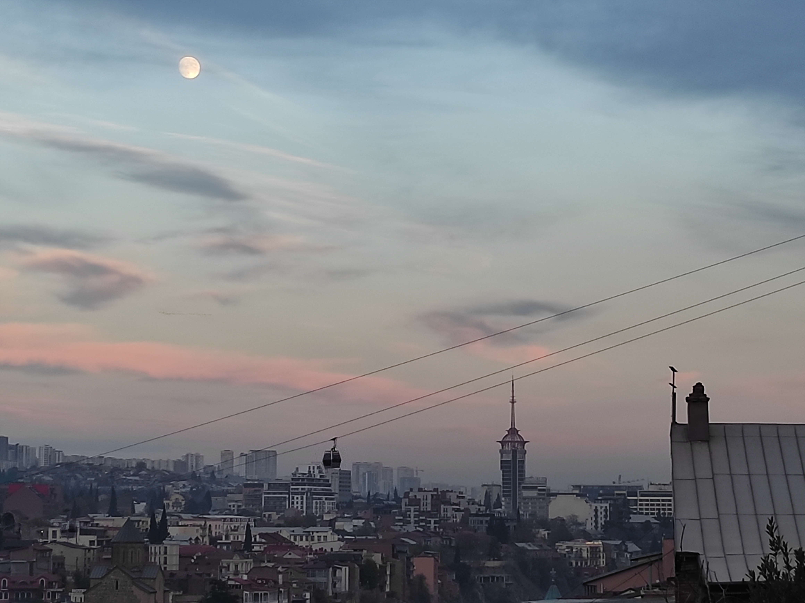

Georgia was on mind for quite a while, at least from 2019 when I went to Ukraine by train just because in that occasion I didn't want to fly. This time I did fly to Ankara and crossed half of Turkey before finding myself in front of a lady at the border that for some reason started to look skeptically at me and couldn't stop scrolling through the pages of my passport. That day was exhausting and the only thing I wanted was to crush on a bed somewhere in the country. I knew Batumi was described as a sort of sovietic-Vegas-like kind of city and when I found myself looking down from a balcony on the 25th floor with the bright lights of Marriott hotel reflecting on my face and the slaps and the cold breeze of the Black sea waves, I know what that meant.
The morning after just fresh out of bed I was ready to go. "Marshrutka" is one of the words you supposed to know in Georgia. It is a russian word that more or less means "van". Marshrutkas take you all around the country relatively fast and cheap and they are easy to find but very uncomfortable. Kutaisi was a nice discovery but for me sadly nothing more than a nice dinner with local red wine because I was very short on time and I had to leave already the day after. So I rushed to Tbilisi, got there in the evening and had another nice dinner with red wine before finally being able to go up on the Caucasus to see some nature. Stepantsminda is a town 1700m on the sea level, 20km far from the border with Russia, home of the some of the most amazing mountains I have ever seen (and I come from a mountain region).

I started my trail just a few hours before it was getting dark despite of the fact that I was told I shouldn't be back after dark, because temperature are really freezing up there. I thought I could still make it. After a while walking in the snow I heard someone screaming at me "Dangerous, be careful". I thought my mind was playing tricks on me but when I looked on my left, I saw a man lying in the snow, unable to move. At first sight I thought it could be a hunter, maybe chasing some local bear (I knew that in that area they are quite common) but when he started to ask for help, I slowly headed towards him and asked if he spoke english. The answer was "yes" and the guy simply explained that he got stuck in the snow and couldn't proceed. I got him out of that situation and for the next three days I made myself a new travel buddy, Yan, a chinese guy based in Russia, busy travelling around and trying his best to put himself into troubles. The guy was a pleasant companion and I am glad we had the chance to spend sometime together and talk about how different it is to leave in Europe or in Russia.

Those days I was hosted in a very cozy small house, run by a local old lady very friendly that unfortunately could not speak english, but we tried our best to communicate using modern devices and translators and at the end we managed to entertain each other in the evening and have nice conversations. The day I left Kazbegi, I was heading to Tbilisi once again and officially start my return trip to Europe.

Tbilisi old fortress is reachable with a cable car and it is an amazing spot for sunset. The city is realtively small and welcoming, down in a valley surrounded by nature.
**